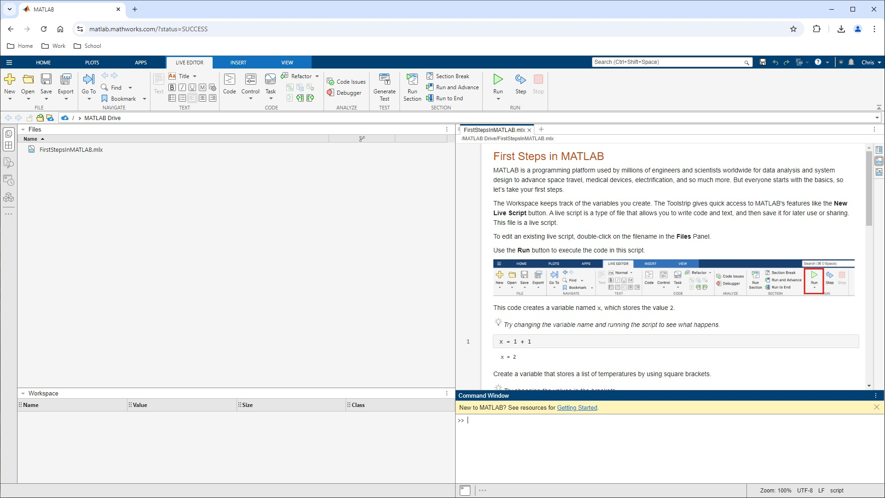
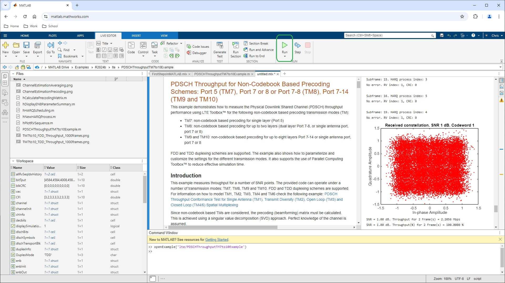

GitHub FILTERED
MATLAB LTE Toolbox Instructions
Starting with a basic LTE waveform generation
Download MATLAB or sign onto the online web app
From the Apps pulldown, choose the Wireless Waveform Generator
 From the app's Waveform Type pulldown, choose Downlink RMC (Reference Measurement Channels)
From the app's Waveform Type pulldown, choose Downlink RMC (Reference Measurement Channels)
 For the Reference Channel pulldown, choose R. 105 FFD...
For the Reference Channel pulldown, choose R. 105 FFD...
 Click Generate
Click Generate
 From Marc Barberis's MathWorks tutorial
https://www.mathworks.com/videos/lte-physical-layer-modeling-with-matlab-1489419670986.html from 2:58 to 7:07 -
From Marc Barberis's MathWorks tutorial
https://www.mathworks.com/videos/lte-physical-layer-modeling-with-matlab-1489419670986.html from 2:58 to 7:07 -
Let's start with an example that shows a generation of downing reference measurement channels, or RMCs. These are waveforms specified in the standard which we can generate with just a few mouse clicks, so let me switch to MATLAB.
Let's start the wireless waveform generator app. You will find it in the App tabs under Signal Processing and Communication. The wireless waveform generator supports generic waveforms, as well as 5G NR, LTE, wireless Lan, and Bluetooth. Let's select a downlink RNC, or reference measurement channel.
The standard defines those RMCs in order to let people compare the performance of the LTE system against a given benchmark. The wireless waveform generator app makes dozens of those available at your fingertip. R105 is a recent addition to this list with 1,024 QAM. It is a 20 megahertz or 100 resource block waveform with two antennas, as you can see here.
You can also configure many other parameters, such as the set ID from this menu. When I select Generate, I get an LTE compliant waveform. It is all generated for you without having to know much about at LTE all. The top plot shows the spectrum of the generated waveform. And we can see it is 18 megahertz wide. The bottom plot presents a view of the OFDM grid, which is the grid before FDM modulation.
The x x-axis is OFDM symbol number, which relates to time, while the y-axis is the subcarrier number or frequency. Most of the resources are assigned to the PDSCH, or data channel, in green. At this point you have several options. You can export the generated waveform to the MATLAB workspace or to a file. You can automatically generate MATLAB code that generates the waveform and visualizations.
Or you can send this waveform to a connected instrument using the Transmitter tab. In this case, the app your network for available instruments, and you can set the carrier frequency and output power before hitting the Transmit button to have the waveform sent out over the air, if you have an instrument connected, which I don't have. Here we want to generate MATLAB code that generates this waveform.
As you can see, we first retrieve all parameters associated with R105. We then define a payload and have a one-line LTE transmitter on this line. LTE RMCDL tool performs all the processing in an LTE transmitter and produces the output waveform, the OFDM grid, and the configuration.
Here, I want to emphasize a really important point. You can change any of these parameters as to LTE RMCDL tool, and thereby customize the waveform by varying the modulation scheme, coding rate, resource allocation, transmission mode, and so forth.
So this is a very quick illustrative example that accesses some of the functions in the toolbox. I'm not going into a lot of detail right now. But hopefully this gives a good idea of waveform generation with a toolbox.
Let me summarize what we have seen so far. We can generate off-the-shelf waveforms, such as the RMCs, FRCs, and test models, from the Wireless Waveform Generator app. We can also generate the equivalent MATLAB code, and as I have just alluded to, you can modify any of those parameters to create your own custom waveform. And this is something we will see in upcoming examples.
To simulate an end-to-end LTE model from transmitter, to propagation channel, to receiver
In the Command Window enter
openExample('lte/PDSCHThroughputTM7to10Example')
For reference, this comes from https://www.mathworks.com/help/lte/examples.html.
It is for Physical Downlink Shared Channel (PDSCH / PHY) Transmission Mode 7 to 10
After it loads, right-click on the PDSCHThroughputTM7to10Example.m file tab, then choose to Open it as Live Script

untitled.mlx will open. Click Run in the menu bar

Also from Marc's tutorial from 11:35 to 14:14 -
At this point, we are ready to look at a complete end-to-end simulation. There are many such examples in LTE Toolbox, including PDSCH or data app report. What you typically have is a transmitter, channel, impairments, and a receiver, and closed loop information that controls possible re-transmission and dynamic informing.
I want to highlight two such examples in the toolbox, one for code word base pre-coding schemes, such as transmission mode 4, and one for non-codebook-based pre-coding schemes, such as transmission mode 9. When running this example, you can obtain throughput plots such as the one shown on the right as a function of the SNR.
Let us have a look at one of these examples. This is the list of LTE examples, and I select the end-to-end category. There's two examples here, the ones I was just mentioning. Let's look at the non-codebook-based pre-coding scheme example, which enables transmissions of up to eight layers. It supports transmission modes 7, 8, 9, and 10.
Note how we set up parameters depending on the selected mode. Here are the parameters for the propagation channel, which is the pedestrian channel. And there are to loops, one to iterate on the SNR, and want to run a certain number of frames. At the heart of a simulation, after part dealing with HARQ, you will recognized the one-line transmitter followed by the fading channel and additional noise.
We then enter the receiver per stay with timing estimation, de-modulation, channel estimation, MIMO EQUALIZATION inside the LTE PDSCH code function, and Turbo coding. At this point, we can compute throughput and bit error rate.
One point that I want to emphasize is that LTE toolboxes is structured such that you can easily look at and replace functions with your own versions. If, for example, you have a more advanced equalizer, or a different way to compute something, you can simply swap out one of our function calls for your own IP, while taking advantage of the whole infrastructure to run performance simulations.